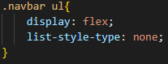
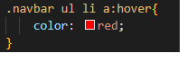

in this guide we will learn how to use complex css selctors
If you didnt already know what css is and a css selecotr is then read this:
CSS stands for Cascading Style Sheets · CSS describes how HTML elements are to be displayed on screen, paper, or in other media
A CSS selector is the first part of a CSS Rule. It is a pattern of elements and other terms that tell the browser which HTML elements should be selected to have the CSS property values inside the rule applied to them eg :
This shows the css selector of H1 which relates to the HTML for the heading number 1 (H1) tag
It also shows the class of special being selected ie: .special
If a mian tag is being selected its just the main tag name in css followed by the rules { rules } If its a class then we use ."name-of-class" This is something thats just going to have to be memorised and will come naturally if you write css and HTML code a lot.
okay so thats the easy part out of the way now for complex CSS selectors
Complex css sectors are 2 or more simple css selectors used together eg:
or even more complex...
This is where things get confusing...
In order to select some HTML code (eg if you have a navbar and you want to apply jarfvascript to it) you may need complex CSS selectors
The .navbar ul selector refers to both navbar class and the orderd list tag in HTML
Its important to remember you can add classes togehter and also list HTML code with more than one class